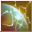

Loading...
Items
Armas
Espada
Maza
Hacha
Espada dos manos
Maza dos manos
Hacha dos manos
Arco
Arma de Fuego
Reliquia
Bastón
Escudo
Arma mec. 1 mano
Arma mec. 2 manos
Cañon Pesado
Flechas
Balas de cañon
Llave de Cristal
Katana
Armadura
Cabeza
Cuerpo
Piernas
Manos
Piernas
Dorso
Accesorio
Mochila
Equipo Especial
Equipo 1 mano
Equipo 2 manos
Equipo Cabeza
Equipo Espalda
Cuerpo
Articulos de Talento
Talentos
Planos
Fragmentos
Skills
Piedras Mega
Sprite
Sprite
Monstruo Embotellado
Mochila
Formula Isla Sprite
Cria Isla Sprite
Receta Isla Sprite
Edificio Isla Sprite
Legados
Muebles Sprite
Emblema Sprite
Skill Book(Novice)
Skill Book(Intermediate)
Skill Book(Advanced)
Materiales
Mineria
Forraje
Caza
Materiales de equipo
Piedras de Equipo
Gema Prismatica
Piedra Runa
Piedra de Resonancia
Nucleos
Monturas
Tronos
Comb Talentos
Berserker
Paladin
Ranger
Asesino
Clerigo
Sabio
Mago
Nigromante
Artificiero
Artillero
Duelista
Relojero
Quest
Titulos
Skills
Berserker
Paladin
Ranger
Asesino
Clerigo
Sabio
Mago
Nigromante
Artificiero
Artillero
Duelista
Relojero
Sprites
Spanish
English
Español
Portuguese
French
Sugerencias
Contáctenos
Creditos
Haz Alquimia
F.A.Q
Hora
00
:
00
:
00
Horario Emisarios
<Avatar del Emisario> Heraldo de la Lujuria
Bosque Antiguo (X:290, Y:370) Lunes 20:35
<Emisario del Juicio Final Lunático> Locura de Lujuria
Valle de Caballeros (X:510.53, Y:619.852) Lunes 20:35
<Emisario Pesadilla> Voraz Ladona
Club de Lucha del Rey Sprite (X:134.088, Y:347.754) Lunes 15:30
<Emisario Antiguo> Justicia
Valle del Espíritu (X:439.138, Y:559.115) Lunes 20:30
<Emisario de Ilusión> Yen Alfa
Aldea Aura Ficticia (X:639.151, Y:232.943) Lunes 15:30
<Emisario de Ilusión> Zhong Iota
Sendero Llamafría (X:534.548, Y:578.733) Lunes 20:30
Skills Cleric
Skills
Skills Pasivos
Nombre
Nivel
Efecto
Juicio Fulgurante 1
Skills
×
Juicio Fulgurante 1
Juicio Fulgurante 2
Juicio Fulgurante 3
Juicio Fulgurante 4
Juicio Fulgurante 5
Juicio Fulgurante 6
Sentencia Brillante Mejorada 1
Sentencia Brillante Mejorada 2
Juicio Sagrado 1
Juicio Sagrado 2
6
Info
Oración Curativa 1
Skills
×
Oración Curativa 1
Oración Curativa 2
Oración Curativa 3
Oración Curativa 4
Oración Curativa 5
Oración Curativa 6
6
Info
Destello Glorioso 1
Skills
×
Destello Glorioso 1
Destello Glorioso 2
Destello Glorioso 3
Destello Glorioso 4
Destello Glorioso 5
Destello Glorioso 6
Impacto de Espíritu Sacro 1
Impacto de Espíritu Sacro 2
Golpe Espíritu Santo 1
Golpe Espíritu Santo 2
6
Info
Guardia Ligero 1
Skills
×
Guardia Ligero 1
Guardia Ligero 2
Guardia Ligero 3
Guardia Ligero 3
Guardia Ligero 4
Guardia Ligero 4
Guardia Ligero 5
Guardia Ligero 5
Guardia Ligero 6
Guardia Ligero 6
6
Info
Oración de Resurrección 1
Skills
×
Oración de Resurrección 1
Oración de Resurrección 2
Oración de Resurrección 3
8
Info
Limpia Veneno 1
Skills
×
Limpia Veneno 1
Limpia Veneno 2
Limpia Veneno 3
Limpia Veneno 4
Limpia Veneno 5
Limpia Veneno 6
Limpia Veneno 7
10
Info
Purificador de Cuerpo 1
Skills
×
Purificador de Cuerpo 1
Purificador de Cuerpo 2
Purificador de Cuerpo 3
Purificador de Cuerpo 4
Purificador de Cuerpo 5
Purificador de Cuerpo 6
Purificador de Cuerpo 7
10
Info
Mata Maldiciones 1
Skills
×
Mata Maldiciones 1
Mata Maldiciones 2
Mata Maldiciones 3
Mata Maldiciones 4
Mata Maldiciones 5
Mata Maldiciones 6
Mata Maldiciones
10
Info
Palabra Defensora 1
Skills
×
Palabra Defensora 1
Verdad de Vigilancia 2
Verdad de Vigilancia 3
16
Info
Bendición de Restauración 1
Skills
×
Bendición de Restauración 1
Bendición de Restauración 2
Bendición de Restauración 3
Bendición de Restauración 4
16
Info
Veredicto Divino 1
Skills
×
Veredicto Divino 1
Veredicto Divino 2
Veredicto Divino 3
Veredicto Divino 4
31
Info
Granada de Luz Divina 1
Skills
×
Granada de Luz Divina 1
Granada de Luz Divina 2
Granada de Luz Divina 3
Granada de Luz Divina 4
Granada de Luz Divina 5
Granada de Luz Divina 6
Granada de Luz Divina 7
Granada de Luz Divina 8
Granada de Luz Divina 9
Sello Iluminado 1
Sello Iluminado 2
Sello Iluminado 3
Sello Iluminado 4
Sello Iluminado 5
Sello Sagrado 1
Sello Sagrado 2
Sello Sagrado 3
Sello Sagrado 4
31
Info
Imposición de Manos 1
Skills
×
Imposición de Manos 1
Imposición de Manos 2
Imposición de Manos 3
Imposición de Manos 4
Imposición de Manos 5
Imposición de Manos 6
Imposición de Manos 7
Imposición de Manos 8
Imposición de Manos 9
Imposición de Manos Mejorada 1
Imposición de Manos Mejorada 2
Imposición de Manos Mejorada 3
Imposición de Manos Mejorada 4
Imposición de Manos Mejorada 5
Rezo Sanador 1
Rezo Sanador 2
Oración Curativa 3
Oración Curativa 4
31
Info
Oración de Recuperación 1
Skills
×
Oración de Recuperación 1
Oración de Recuperación 2
Oración de Recuperación 3
Oración de Recuperación 4
Oración de Recuperación 5
Oración de Recuperación 6
Oración de Recuperación 7
Oración de Recuperación 2
Oración de Recuperación 3
Salvación 1
Salvación 2
31
Info
Barrera Curativa 1
Skills
×
Barrera Curativa 1
Barrera Curativa 2
Barrera Curativa 3
Barrera Curativa 4
Barrera Curativa 5
Barrera Curativa 6
Barrera Curativa 7
Gran Barrera Sanadora 3
Gran Barrera Curativa 2
Súper Barrera Curativa 1
Súper Barrera Curativa 2
31
Info

Palabra Defensora 1
Skills
×
Palabra Defensora 1
Palabra Defensora 2
Palabra Defensora 3
Palabra Defensora 4
Palabra Defensora 5
Palabra Defensora 6
Palabra Defensora Reforzada 7
Palabra Defensora Reforzada 2
Palabra Verdadera de Guardianes 3
Oda Poderosa 1
Oda Poderosa 2
31
Info
Censura de Culpables 1
Skills
×
Censura de Culpables 1
Censura de Culpables 2
Censura de Culpables 3
Censura de Culpables 4
Censura de Culpables 5
Censura de Culpables 6
Censura de Dios 1
Censura de Dios 2
Censura de Dios 3
Censura de Dios 4
Censura de Dios 5
Furia de Espíritus 1
Furia de Espíritus 2
Espíritus Coléricos 1
Espíritus Coléricos 2
32
Info
Fuerza Persistente 1
Skills
×
Fuerza Persistente 1
Fuerza Persistente 2
Fuerza Persistente 3
Fuerza Persistente 4
Fuerza Persistente 5
Fuerza Persistente 6
Bendición de Ataque 1
Bendición de Ataque 2
Bendición de Ataque 3
Proverbios de Ataque 1
Proverbios de Ataque 2
Proverbios de Ataque 3
32
Info
Armadura de Esperanza 1
Skills
×
Armadura de Esperanza 1
Armadura de Esperanza 2
Armadura de Esperanza 3
Armadura de Esperanza 4
Armadura de Esperanza 5
Armadura de Esperanza 6
Bendición de Defensa Mágica 1
Bendición de Defensa Mágica 2
Bendición de Defensa Mágica 3
Proverbios de Defensa 1
Proverbios de Defensa 2
Proverbios de Defensa 3
32
Info
Tranquilidad 1
Skills
×
Tranquilidad 1
Tranquilidad 2
Tranquilidad 3
Tranquilidad 4
Escapada Gloriosa 1
Escapada Gloriosa 2
Escape de Gloria 3
Forma Bendita 1
Forma Bendita 2
32
Info
Manantial de Vida 1
Skills
×
Manantial de Vida 1
Manantial de Vida 2
Manantial de Vida 3
Manantial de Vida 4
Manantial de Vida 5
Manantial Divino 1
Manantial Divino 2
Bendición de Vida 1
Bendición de Vida 2
32
Info
Demolición Martillo Divino 1
Skills
×
Demolición Martillo Divino 1
Demolición Martillo Divino 2
Demolición Martillo Divino 3
Demolición Martillo Divino 4
Demolición Martillo Divino 5
Demolición Martillo Divino 6
Demolición Martillo Divino 7
Demolición Martillo Divino 8
Martillo Sacro Devastador Mejorado 1
Martillo Sacro Devastador Mejorado 2
Martillo Sacro Devastador Mejorado 3
Martillo Sacro Devastador Mejorado 4
Golpe del Gran Martillo Sagrado 5
Martillo de Juicio 1
Martillo de Juicio 2
Martillo del Juicio 3
Martillo del Juicio 4
34
Info
Dedo Brillante 1
Skills
×
Dedo Brillante 1
Dedo Brillante 2
Dedo Brillante 3
Dedo Brillante 4
Dedo Brillante 5
Dedo Brillante 6
Dedo Brillante 7
Dedo Brillante 8
Ataque Estruendoso 1
Ataque Estruendoso 2
Ataque Estruendoso 3
Ataque Estruendoso 4
Golpe del Cielo Encendido 5
Masa Ardiente Santa 1
Masa Ardiente Santa 2
Masa Ardiente Santa 3
Masa Ardiente Santa 4
34
Info
Verdad Luz Sacra 1
Skills
×
Verdad Luz Sacra 1
Verdad Luz Sacra 2
Verdad Luz Sacra 3
Verdad Luz Sacra 4
Verdad Luz Sacra 5
Verdad Luz Sacra 6
Verdad Luz Sacra 7
Verdad Luz Sacra 8
Proverbios Sacros 1
Proverbios Sacros 2
Proverbios Sacros 3
Proverbios Sacros 4
Proverbios Sagrados 5
Proverbios Luz Sacra 1
Proverbios Luz Sacra 2
Proverbios Luz Sacra 3
Proverbios Luz Sacra 4
36
Info
Momento de Silencio 1
Skills
×
Momento de Silencio 1
Momento de Silencio 2
Momento de Silencio 3
Ola de Silencio 1
Ola de Silencio 2
38
Info
Toque Curativo 1
Skills
×
Toque Curativo 1
Toque Curativo 2
Toque Curativo 3
Toque Curativo 4
Toque Curativo 5
Toque Curativo 6
Toque Curativo 7
Toque Curativo Mejorado 1
Toque Curativo Mejorado 2
Toque Curativo Mejorado 3
Toque Curativo Mejorado 4
Toque de Remiendo Mejorado 5
Deseo Santo 1
Deseo Santo 2
Deseo Santo 3
Deseo Santo 4
40
Info
Visión del Fin 1
Skills
×
Visión del Fin 1
Visión del Fin 2
Visión del Fin 3
Visión del Fin 4
Visión del Fin 5
Visión del Fin 6
Visión del Fin 7
Día de Juicio 1
Día de Juicio 2
Día de Juicio 3
Día de Juicio 4
Día del Juicio 5
Castigo Celestial 1
Castigo Celestial 2
Castigo Celestial 3
Castigo Celestial 4
40
Info
Barrera Divina 1
Skills
×
Barrera Divina 1
Barrera Divina 2
Barrera Divina 3
Barrera Divina 4
Barrera Divina 5
Súper Barrera Divina 1
Súper Barrera Divina 2
Dominio de Ángel 1
Dominio de Ángel 2
40
Info
Barrera Divina 1
Skills
×
Barrera Divina 1
Barrera Divina 2
Barrera Divina 3
Barrera Bendita 1
Barrera Bendita 2
Barrera Bendita 3
50
Info
Martillo del Juicio 1
Skills
×
Martillo del Juicio 1
Martillo del Juicio 2
Martillo del Juicio 3
Martillo del Juicio 4
Martillo del Juicio 5
Martillo del Juicio 6
Martillo del Juicio 7
Martillo Juzgador 1
Martillo de Juicio 2
Martillo del Juicio 3
Martillo del Juicio 4
61
Info
Gracia de Pureza
Skills
×
Gracia de Pureza
61
Info
Posible Libertad
Skills
×
Posible Libertad
66
Info
Escapó Sin Dejar Rastro
Skills
×
Escapó Sin Dejar Rastro
66
Info
Barrera de Dios
Skills
×
Barrera de Dios
66
Info
Rescate 1
Skills
×
Rescate 1
Rescate 2
Rescate 3
Rescate 4
Rescate 5
66
Info
Guardián Leal 1
Skills
×
Guardián Leal 1
Guardián Leal 2
Guardián Leal 3
Guardián Leal 4
Guardián Leal 5
Guardián Leal 6
Guardián Leal 7
Guardián Leal 8
Guardián Leal 9
67
Info
Luz Explosiva 1
Skills
×
Luz Explosiva 1
Luz Explosiva 2
Luz Explosiva 3
Luz Explosiva 4
Luz Explosiva 5
67
Info
Beso de Ángel 1
Skills
×
Beso de Ángel 1
Beso de Ángel 2
Beso de Ángel 3
Beso de Ángel 4
Beso de Ángel 5
68
Info
Proverbios de Asalto 1
Skills
×
Proverbios de Asalto 1
Proverbios de Asalto 2
Proverbios de Asalto 3
Proverbios de Asalto 4
Proverbios de Asalto 5
Proverbios de Asalto 6
Proverbios de Asalto 7
69
Info
Disipa-Desastre
Skills
×
Disipa-Desastre
74
Info
Oración de Certeza 1
Skills
×
Oración de Certeza 1
Proverbios de Potencial 1
Proverbios de Potencial 2
75
Info
Guerrero de la Luz
Skills
×
Guerrero de la Luz
84
Info
Castigo Celestial 1
Skills
×
Castigo Celestial 1
Castigo Celestial 2
Castigo Celestial 3
Castigo Celestial 4
86
Info
Máxima Barrera de Luz Divina 1
Skills
×
Máxima Barrera de Luz Divina 1
Máxima Barrera de Luz Divina 2
Máxima Barrera de Luz Divina 3
Máxima Barrera de Luz Divina 4
Máxima Barrera de Luz Divina 5
86
Info
Bendición de Luz 1
Skills
×
Bendición de Luz 1
Bendición de Luz 2
86
Info
Escudo Sagrado
Skills
×
Escudo Sagrado
91
Info
Escudo Espiritual Divino
Skills
×
Escudo Espiritual Divino
91
Info
Explosión Bendita
Skills
×
Explosión Bendita
91
Info
Escudo Espiritual Sagrado
Skills
×
Escudo Espiritual Sagrado
91
Info
Curación Sagrada
Skills
×
Curación Sagrada
91
Info
Nombre
Nivel
Efecto
Mega Llama Gloriosa 1
Skills
×
Mega Llama Gloriosa 1
Mega Llama Gloriosa 2
Mega Llama Gloriosa 3
Mega Llama Gloriosa 4
Mega Llama Gloriosa 5
6
Info
Alma Fracturada a
Skills
×
Alma Fracturada a
Alma Fracturada ß
Alma Fracturada ß
Alma Fracturada d
6
Info
Resistencia Mágica
Skills
×
Resistencia Mágica
6
Info
Restauración de Maná
Skills
×
Restauración de Maná
16
Info
Mega Granada Luz Divina 1
Skills
×
Mega Granada Luz Divina 1
Mega Granada Luz Divina 2
Mega Granada Luz Divina 3
Mega Granada Luz Divina 4
Mega Granada Luz Divina 5
31
Info
Mega Palabra Defensora 1
Skills
×
Mega Palabra Defensora 1
Mega Palabra Defensora 2
Mega Palabra Defensora 3
Mega Palabra Defensora 4
Mega Palabra Defensora 5
31
Info
Mega Censura del Culpable 1
Skills
×
Mega Censura del Culpable 1
Mega Censura del Culpable 2
Mega Censura del Culpable 3
Mega Censura del Culpable 4
Mega Censura del Culpable 5
32
Info
Mega Martillo Sacro Devastador 1
Skills
×
Mega Martillo Sacro Devastador 1
Mega Martillo Sacro Devastador 2
Mega Martillo Sacro Devastador 3
Mega Martillo Sacro Devastador 4
Mega Martillo Sacro Devastador 5
34
Info
Mega Dedo Brillante 1
Skills
×
Mega Dedo Brillante 1
Mega Dedo Brillante 2
Mega Dedo Brillante 3
Mega Dedo Brillante 4
Mega Dedo Brillante 5
34
Info
Mega Palabra Verdadera de Luz Divina 1
Skills
×
Mega Palabra Verdadera de Luz Divina 1
Mega Palabra Verdadera de Luz Divina 2
Mega Palabra Verdadera de Luz Divina 3
Mega Palabra Verdadera de Luz Divina 4
Mega Palabra Verdadera de Luz Divina 5
36
Info
Mega Instante Silencioso 1
Skills
×
Mega Instante Silencioso 1
Mega Instante Silencioso 2
Mega Instante Silencioso 3
Mega Instante Silencioso 4
Mega Instante Silencioso 5
38
Info
Mega Barrera Divina 1
Skills
×
Mega Barrera Divina 1
Mega Barrera Divina 2
Mega Barrera Divina 3
Mega Barrera Divina 4
Mega Barrera Divina 5
50
Info
Mega Martillo del Juicio 1
Skills
×
Mega Martillo del Juicio 1
Mega Martillo del Juicio 2
Mega Martillo del Juicio 3
Mega Martillo del Juicio 4
Mega Martillo del Juicio 5
61
Info
Oráculo Sagrado 1
Skills
×
Oráculo Sagrado 1
Oráculo Sagrado 2
Oráculo Sagrado 3
66
Info
Combo de Luz 1
Skills
×
Combo de Luz 1
Combo de Luz 2
Combo de Luz 3
66
Info
Mega Sello Iluminado 1
Skills
×
Mega Sello Iluminado 1
Mega Sello Iluminado 2
Mega Sello Iluminado 3
Mega Sello Iluminado 4
Mega Sello Iluminado 5
66
Info
Mega Martillo Sacro Devastador Mejorado 1
Skills
×
Mega Martillo Sacro Devastador Mejorado 1
Mega Martillo Sacro Devastador Mejorado 2
Mega Martillo Sacro Devastador Mejorado 3
Mega Martillo Sacro Devastador Mejorado 4
Mega Martillo Sacro Devastador Mejorado 5
66
Info
Persecución Divina 1
Skills
×
Persecución Divina 1
Persecución Divina 2
Persecución Divina 3
Persecución Divina 4
Persecución Divina 5
Persecución Divina 6
66
Info
Mega Ataque Estruendoso 1
Skills
×
Mega Ataque Estruendoso 1
Mega Ataque Estruendoso 2
Mega Ataque Estruendoso 3
Mega Ataque Estruendoso 4
Mega Ataque Estruendoso 5
66
Info
Mega Ley del Silencio 1
Skills
×
Mega Ley del Silencio 1
Mega Ley del Silencio 2
Mega Ley del Silencio 3
Mega Ley del Silencio 4
Mega Ley del Silencio 5
66
Info
Mega Palabra Defensora Mejorada 1
Skills
×
Mega Palabra Defensora Mejorada 1
Mega Palabra Defensora Mejorada 2
Mega Palabra Defensora Mejorada 3
Mega Palabra Defensora Mejorada 4
Mega Palabra Defensora Mejorada 5
66
Info
Mega Impacto de Espíritu Sacro 1
Skills
×
Mega Impacto de Espíritu Sacro 1
Mega Impacto de Espíritu Sacro 2
Mega Impacto de Espíritu Sacro 3
Mega Impacto de Espíritu Sacro 4
Mega Impacto de Espíritu Sacro 5
68
Info
Mega Proverbios Sacros 1
Skills
×
Mega Proverbios Sacros 1
Mega Proverbios Sacros 2
Mega Proverbios Sacros 3
Mega Proverbios Sacros 4
Mega Proverbios Sacros 5
68
Info
Mega Censura de Dios 1
Skills
×
Mega Censura de Dios 1
Mega Censura de Dios 2
Mega Censura de Dios 3
Mega Censura de Dios 4
Mega Censura de Dios 5
68
Info
Mega Barrera Bendita 1
Skills
×
Mega Barrera Bendita 1
Mega Barrera Bendita 2
Mega Barrera Bendita 3
Mega Barrera Bendita 4
Mega Barrera Bendita 5
68
Info
Amnistía Divina 1
Skills
×
Amnistía Divina 1
Amnistía Divina 2
86
Info
Alma Pura 1
Skills
×
Alma Pura 1
Alma Pura 2
Alma Pura 3
Alma Pura 4
Alma Pura 5
86
Info
Veredicto Final 1
Skills
×
Veredicto Final 1
91
Info
Creditos
×
Desarrolladores:
Kougami
EX GS Angelique
Colaboradores:
EX GS Roshi
EX GS Marchel
Contáctenos
×
Correos de contacto
admin@grandfantasia-db.com